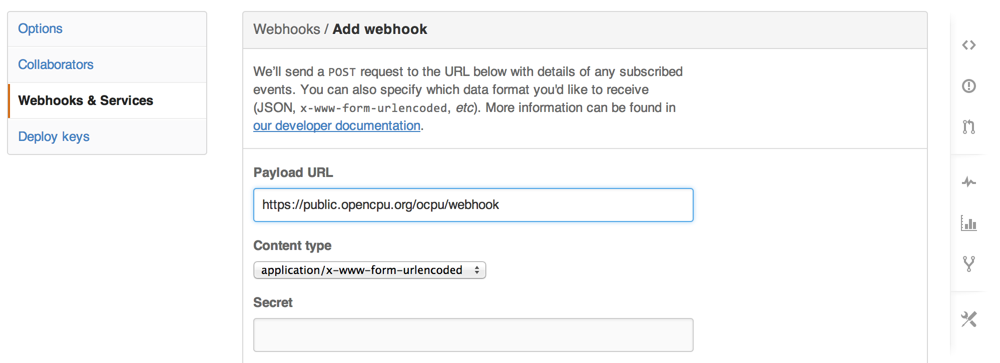

What is OpenCPU
The OpenCPU system provides a HTTP API for scientific computing to build scalable analysis and visualization modules for use in systems, pipelines, and web applications.
Jeroen Ooms
UCLA Statistics
The OpenCPU system provides a HTTP API for scientific computing to build scalable analysis and visualization modules for use in systems, pipelines, and web applications.
curl https://public.opencpu.org/ocpu/library/stats/R/rnorm/json \
-H "Content-Type: application/json" -d '{"n":3, "mean": 10, "sd":10}'
[4.9829, 6.3104, 11.411]
This performs the following procedure
library(jsonlite)
args <- fromJSON('{"n":3, "mean": 10, "sd":10}')
output <- do.call(stats::rnorm, args)
toJSON(output)
Which is equivalent to
rnorm(n=3, mean=10, sd=10)
HTTP for data analysisRPC and object managementJSON, Protocol Buffers, CSV parallel/async requestssecurity policies reproducibilityJavaScript, Ruby, ...curl -v https://demo.ocpu.io/stocks/R/smoothplot -d 'ticker="GOOG"&from="2013-01-01"'
> POST /stocks/R/smoothplot HTTP/1.1
> User-Agent: curl/7.30.0
> Content-Type: application/x-www-form-urlencoded
< HTTP/1.1 201 Created
< Location: https://tmp.ocpu.io/x081cca8c23/
< Access-Control-Allow-Origin: *
< X-ocpu-session: x081cca8c23
< X-ocpu-r: R version 3.1.0 (2014-04-10)
< X-ocpu-locale: en_US.UTF-8
< X-ocpu-time: 2014-06-26 17:29:32 PDT
< X-ocpu-version: 1.4.3
< X-ocpu-server: rApache
< x-ocpu-cache: MISS
//JavaScript client code
var ticker = $("#ticker").val();
var req = $("#plotdiv").rplot("smoothplot", {
ticker : ticker,
from : "2013-01-01"
})
Results in:
smoothplot(ticker=ticker, from="2013-01-01")
Which is the basis of the stocks app and this jsfiddle
Bridges to R are available for most popular languages and environments:
So why would you want to use OpenCPU?
An hello-world example from the rserve manual:
RConnection c = new RConnection();
double d[] = c.eval("rnorm(10)").asDoubles();
OpenCPU layers on a standardized application protocol (HTTP) to provide an API for statistical computing and visualization (with R, or something else...).
Current API uses GET and POST methods. Get is for retrieving objects, POST is for RPC.
| Method | Target | Action | Arguments | Example |
|---|---|---|---|---|
GET |
object | read object | control output format | GET /ocpu/cran/MASS/data/cats/json |
POST |
object | call function | function arguments | POST /ocpu/library/stats/R/rnorm |
GET |
file | read file | - | GET /ocpu/cran/MASS/NEWS GET /ocpu/cran/MASS/scripts/ |
POST |
file | run script | control interpreter | POST /ocpu/cran/MASS/scripts/ch01.R POST /ocpu/cran/knitr/examples/minimal.Rmd |
| HTTP Code | When | Returns |
|---|---|---|
200 OK |
On successful GET request | Resource content |
201 Created |
On successful POST request | Output location |
302 Found |
Redirect | Redirect Location |
400 Bad Request |
R raised an error. | Error message in text/plain |
502 Bad Gateway |
Nginx (opencpu-cache) can't connect to OpenCPU server. | (admin needs to look in error logs) |
503 Bad Request |
Serious problem with the server | (admin needs to look in error logs) |
| Path | What | Examples |
|---|---|---|
../{pkgname}/ |
Package Information | /ocpu/cran/MASS/ |
../{pkgname}/R/ |
Exported R objects | /ocpu/cran/MASS/R/rlm |
../{pkgname}/data/ |
Data included with this package. | /ocpu/cran/MASS/data/cats |
../{pkgname}/man/ |
Manuals (help pages) included in this package. | /ocpu/cran/MASS/man/rlm |
../{pkgname}/* |
Files in package installation directory | /ocpu/cran/MASS/NEWS |
/ocpu/cran/MASS/scripts/ |
| Path | What | Example |
|---|---|---|
../{key}/ |
List available output for this session. | /ocpu/tmp/x08384729/ |
../{key}/R/ |
R objects stored in this session. | /ocpu/tmp/x08384729/R/.val/json |
../{key}/graphics/ |
Graphics generated in this session. | /ocpu/tmp/x08384729/graphics/1/png |
../{key}/source |
Input source code for this session. | /ocpu/tmp/x08384729/source |
../{key}/stdout |
Text printed to STDOUT in this session | /ocpu/tmp/x08384729/stdout |
../{key}/console |
Console I/O (combines source and stdout) | /ocpu/tmp/x08384729/console |
../{key}/zip |
Download session as a zip archive. | /ocpu/tmp/x08384729/zip |
../{key}/tar |
Download session as a gzipped tarball. | /ocpu/tmp/x08384729/tar |
../{key}/files/* |
Files in the working directory | /ocpu/tmp/x08384729/files/mydata.csv |
| Format | Content-type | Encoder (+args) | Example |
|---|---|---|---|
text/plain |
base::print | /ocpu/cran/MASS/R/rlm/print |
|
| json | application/json |
jsonlite::toJSON | /ocpu/cran/MASS/data/cats/json |
| csv | text/csv |
utils::write.csv | /ocpu/cran/MASS/data/cats/csv |
| tab | text/plain |
utils::write.table | /ocpu/cran/MASS/data/cats/tab |
| rda | application/octet-stream |
base::save | /ocpu/cran/MASS/data/cats/rda |
| rds | application/octet-stream |
base::saveRDS | /ocpu/cran/MASS/data/cats/rds |
| pb | application/x-protobuf |
RProtoBuf::serialize_pb | /ocpu/cran/MASS/data/cats/pb |
| png | image/png |
grDevices::png | /ocpu/tmp/{key}/graphics/1/png |
application/pdf |
grDevices::pdf | /ocpu/tmp/{key}/graphics/1/pdf |
|
| svg | image/svg+xml |
grDevices::svg | /ocpu/tmp/{key}/graphics/1/svg |
| File extension | Type | Interpreter | Arguments |
|---|---|---|---|
file.r |
R script | evaluate::evaluate | - |
file.tex |
latex | tools::texi2pdf | - |
file.rnw |
knitr/sweave | knitr::knit + tools::texi2pdf | - |
file.md |
markdown | knitr::pandoc | format (see ?pandoc) |
file.rmd |
knitr/markdown | knitr::knit + knitr::pandoc | format (see ?pandoc) |
file.brew |
brew | brew::brew | output (see ?brew) |
| Path | What |
|---|---|
/ocpu/library/{pkgname}/ |
R packages installed in one of the global libraries on the server. |
/ocpu/user/{username}/library/{pkgname}/ |
R packages installed in the home library of Linux user {username}. |
/ocpu/cran/{pkgname}/ |
Interfaces to the R package {pkgname} that is current on CRAN. |
/ocpu/bioc/{pkgname}/ |
Interfaces to the R package {pkgname} that is current on BioConductor. |
/ocpu/github/{gituser}/{pkgname}/ |
R package {pkgname} in the master branch of the identically named repository from github user {gituser}. |
/ocpu/tmp/{key}/ |
Temporary sessions, which hold outputs from a function/script RPC. |
install.packages("opencpu")
library(opencpu)
#requires Ubuntu 14.04
sudo add-apt-repository ppa:opencpu/opencpu-1.4
sudo apt-get update
sudo apt-get install opencpu
Github Webhook: https://public.opencpu.org/ocpu/webhook
